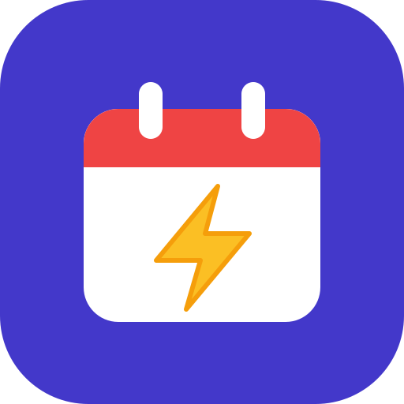
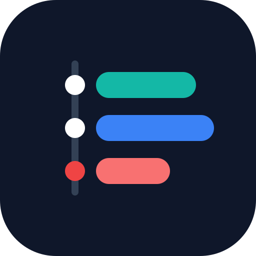
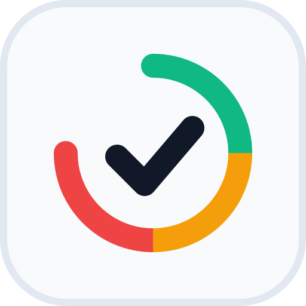

64 / 32px
案1 時計 × チェック
時計の針がチェックマーク。「残り時間」と「完了」を1つの形で表す

64 / 32px
案2 カレンダー × 稲妻
予定を「1秒で把握」できるスピード感

64 / 32px
案3 タイムライン
授業（緑）・バイト（青）・課題（赤）が並ぶ1日。アプリのタイムライン画面そのもの

64 / 32px
案4 切迫度リング
緑→黄→赤で締切が近づく様子と完了のチェック。アプリの危険度判定を表す